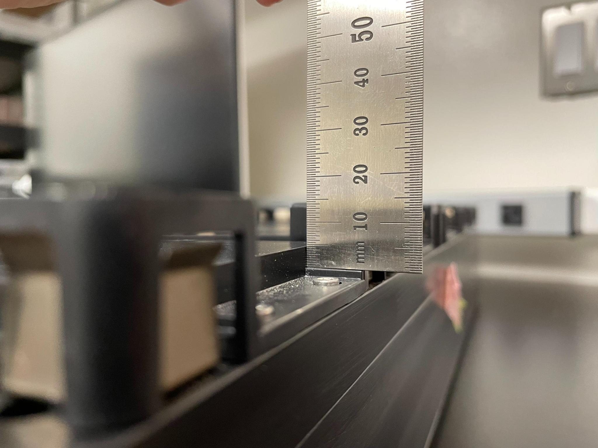

Plate Carriers#
Plate carriers slide into rails on railed-decks like Hamilton STAR(let) and Tecan EVO, and are used to hold Plates.
Pedestal z height#
ValueError(“pedestal_size_z must be provided. See https://docs.pylabrobot.org/resources/plate_carriers.html#pedestal_size_z for more information.”)
Many plate carriers feature a “pedestal” or “platform” on the sites. Plates can sit on this pedestal, or directly on the bottom of the site. This depends on the pedestal and plate geometry, so it is important that we know the height of the pedestal.
The pedestal information is not typically available in labware databases (like the VENUS or EVOware databases), and so we rely on users to measure and contribute this information.
Here’s how you measure the pedestal height:

Once you have measured the pedestal height, you can contribute this information to the PyLabRobot Labware database. Here’s a guide on contributing to the open-source project: “How to Open Source”.
For background, see PR 143: PyLabRobot/pylabrobot#143.